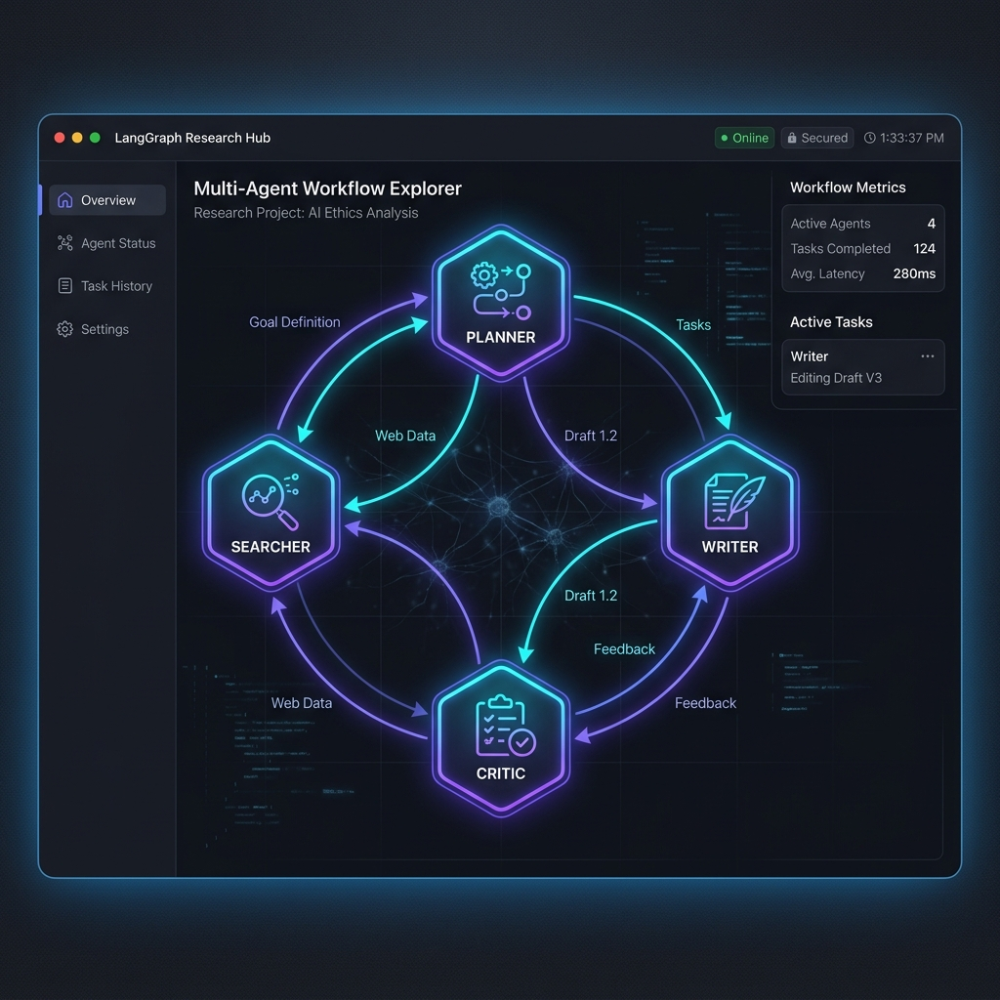
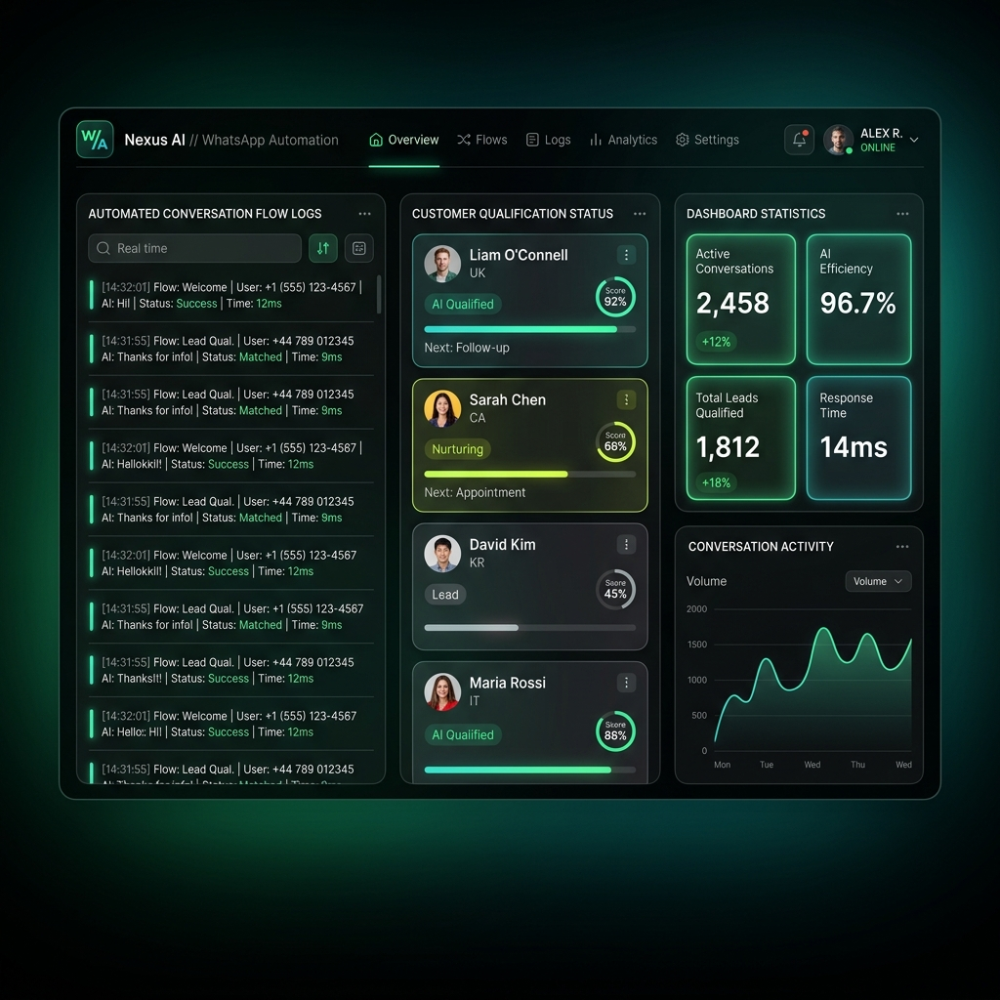
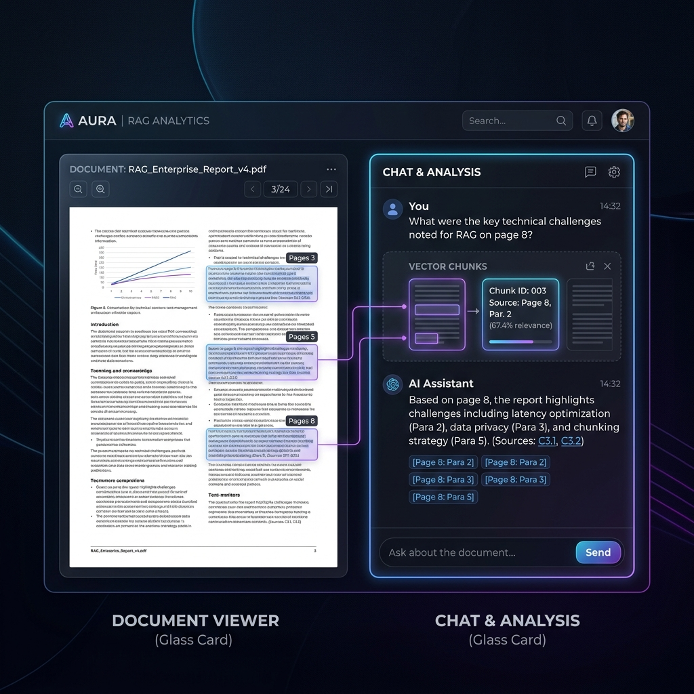
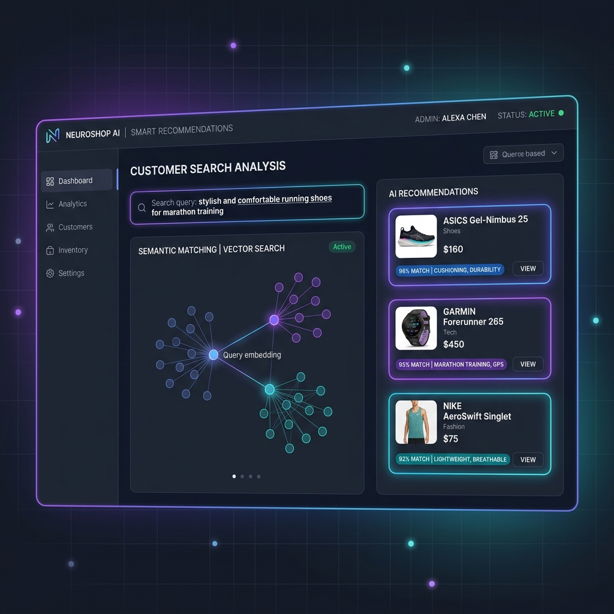

Building AI Agents That Solve Real Problems.
I'm Tanuj Rajput, a third-year Computer Science student specializing in AI Agents, LangGraph workflows, RAG systems, FastAPI backends, and intelligent automation.
I enjoy turning LLMs into useful products.
Over the past year, I've focused heavily on building AI systems using LangChain, LangGraph, FastAPI, and modern AI infrastructure.
Rather than simple chatbot templates, I enjoy building production-grade autonomous workflows, semantic retrieval pipelines, and intelligent multi-agent architectures that process complex tasks end-to-end.
Agent Architectures
Building cyclic graph-based agents that self-correct, plan, and execute using LangGraph.
FastAPI & Python
Writing high-performance backend microservices and automation APIs with full type safety.
Semantic Storage
Integrating vector databases (Pinecone, Chroma, Qdrant) with advanced RAG systems.
Production Ready
Debugging nodes and tracking executions with LangSmith to resolve production bottlenecks.
Work Experience
My professional internships developing production conversational flows and automated AI agents.
- Building a WhatsApp AI Lead Qualification System to automate lead engagement and qualification workflows.
- Developing conversational AI flows to capture, score, and route leads based on user responses.
- Developed AI-powered appointment booking chatbots for salon and beauty SMBs.
- Implemented conversational flows to handle new bookings, cancellations, rescheduling, and general user queries.
- Designed structured dialogue logic and state management for multi-step booking workflows.
Technical Expertise
Practical technologies I use to build robust, automated systems and intelligent backends.
AI & Agents
Backend
Machine Learning
Databases
DevOps
Tools
Featured Work
Production-grade AI solutions and integrations designed for real business tasks.

AI Research Agent
An autonomous multi-agent research assistant built using LangGraph. The agent plans, crawls the web, critiques drafts, and compiles complete formatted reports with citations.

WhatsApp AI Lead Qualifier
A high-scale WhatsApp automation system built on FastAPI. It engages users with natural language, validates lead qualification criteria using custom constraints, and stores verified records.

RAG Question Answering System
A retrieval-augmented generation engine that accepts large PDFs and docx files. Performs intelligent layout chunking, vector index mapping, and handles multi-turn question answering.

AI-Powered Gadget Recommender
An intent-based recommendation engine that utilizes sentence embeddings to match user queries with inventory catalog matches. Provides low-latency recommendation mappings.
Learning Journey
Timeline tracing the technical milestones I've crossed as a Computer Science student.
Learning Python
Mastered core object-oriented structures, algorithms, and logical foundations.
Machine Learning Foundations
Explored model architectures, data analysis (Pandas/NumPy), and Scikit-Learn pipelines.
FastAPI Backend Development
Learned async routing, REST schemas, server optimizations, and microservice structures.
LangChain Framework
Integrated prompt templates, retrieval mechanisms, chains, and conversational memory structures.
LangGraph Agent Architectures
Engineered complex, cyclic graph-based agents that self-correct and execute multi-step workflows.
Docker Containers
Configured multi-container microservices to isolate environments and standardize deployments.
LangSmith Tracing
Monitored prompt sequences, latency profiles, and intermediate node outputs to debug agent workflows.
Redis Caching
Configured memory caches and message brokers to accelerate session states and webhook queues.
Kubernetes Cluster Setup
Began orchestrating containers, load balancing node systems, and handling scale routing.
MCP Servers Integration
Connecting LLMs with custom external APIs and local environments securely using the Model Context Protocol.
Why Work With Me
Practical value I bring to developers, startups, and product teams.
AI Agent Development
Designing self-correcting workflows, tool usage graphs, and task planners rather than basic prompting.
LLM Integration
Integrating vector databases, layout chunking RAG systems, and semantic queries efficiently.
Backend APIs
Writing clean, typed, high-performance async backends with FastAPI to serve production requests.
Automation Systems
Connecting APIs, background jobs, webhooks, and tools like n8n/Redis to automate manual processes.
Core Philosophy
What drives my coding approach and engineering decisions daily.
"Focused on building practical, production-ready AI products rather than simple chatbot templates."
"Always learning modern AI technologies, containerization, and tracing pipelines to build reliable software."
"Interested in solving real business problems and optimizing manual workflows using agentic automation."
Let's build something intelligent together.
I am currently open to internships, freelance projects, and AI agent development integrations. Get in touch and let's coordinate!
Availability Status
- Open for AI Internships
- Freelance Projects
- AI Agent Integrations